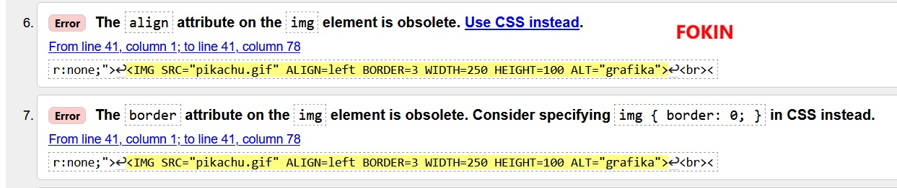

W R Ó Ć

Żart o Jasiu
Jasio i zabawa w przedszkolu
Przedszkolak Jasio wyrzuca na podłogę wszystkie zabawki z półek. Przedszkolanka go pyta:
– Co robisz, Jasiu?
– Bawię się.
– W co?
– W „Cholera, gdzie są klucze do samochodu”.


Żart o lekarzu
Wiadomość od lekarza
Dzwoni lekarz rodzinny do pacjenta i mówi:
– Przejrzałem dokładnie wyniki badań i mam dla pana dwie wiadomości, jedną dobrą drugą złą. Od której zacząć?
– Od dobrej.
– Zostało Panu 24 godziny życia.
– A jaka jest zła wiadomość?
– Miałem zadzwonić wczoraj.

Żart o szkole
Dyrektor i plan lekcji
Dyrektor szkoły przechodzi korytarzem obok klasy, z której słychać straszny wrzask. Wpada, łapie za rękaw najgłośniej wrzeszczącego, wyciąga go na korytarz i stawia w kącie.
Po chwili z klasy wychodzi kolejnych trzech młodzianów, którzy pytają:
- Czy możemy już iść do domu?
- A z jakiej racji?
- No... przecież skoro nasz nowy pan od matematyki stoi w kącie, to chyba lekcji nie będzie, prawda?
| nazwisko ucznia |
imię ucznia |
| Fokin | Ivan |
& Ł ¢ ¥ § © ®
Walidator to program lub urządzenie, które ma za zadanie sprawdzić poprawność dokumentu lub danych.
W kontekście programowania, walidatory oceniają składnię i znaczenie dokumentów.
W kontekście blockchain, walidatorzy weryfikują i zatwierdzają transakcje, zapewniając bezpieczeństwo sieci.
Dodatkowo, walidatory mogą również sprawdzać autentyczność podpisów elektronicznych.

Poprawa błędów, te błędy na pierwszym zdjęciu, zostały naprawione. Błędy 6 i 7 na pierwszym zdjęciu.
